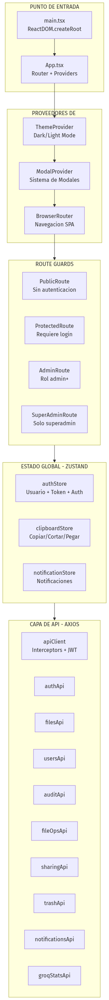
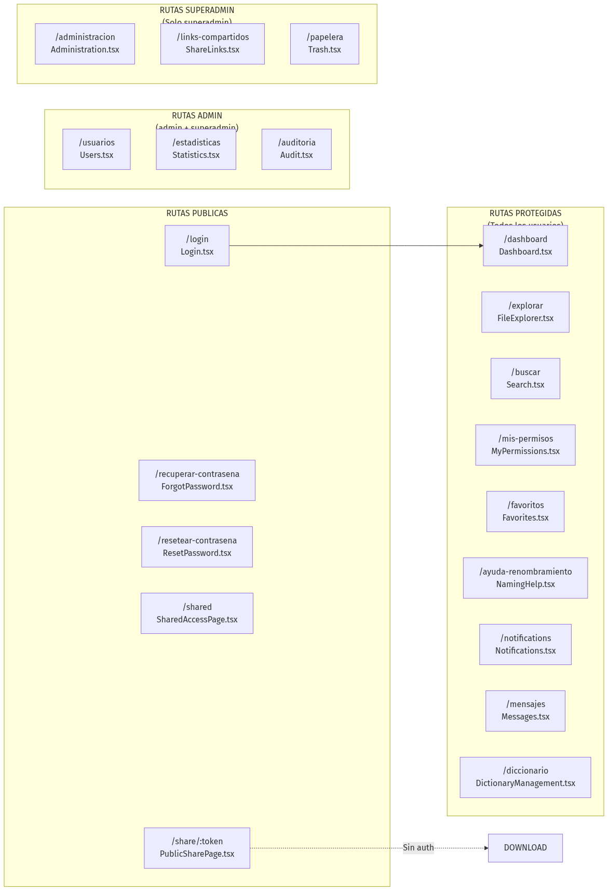
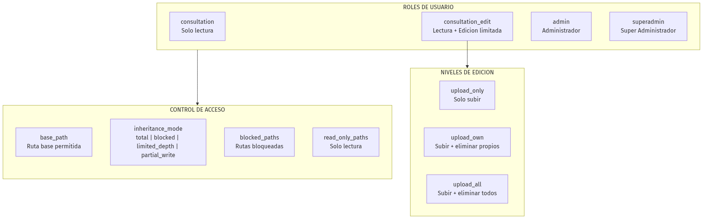
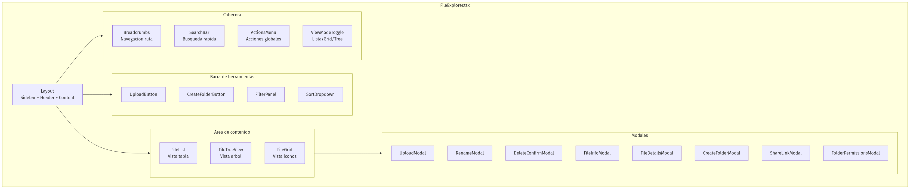
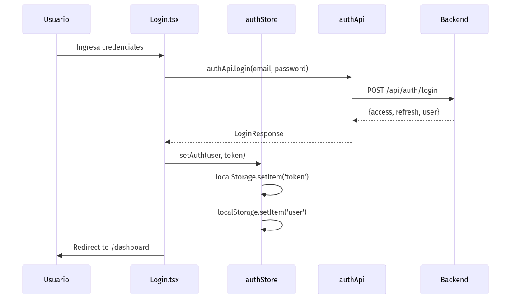
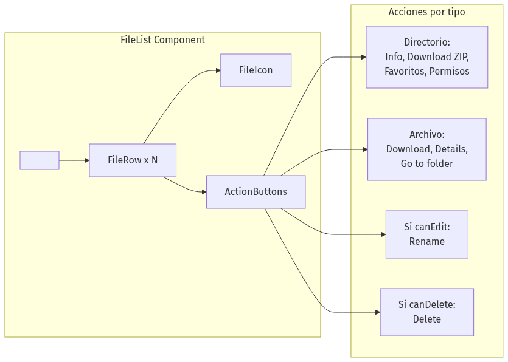
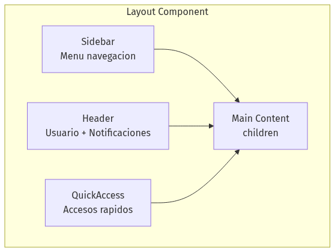

Arquitectura Frontend - Sistema de Gestion de Archivos IGAC
Resumen Tecnico
- Framework: React 18 + TypeScript
- Build Tool: Vite 5.x
- Estilos: TailwindCSS 3.x
- Estado Global: Zustand
- Routing: React Router DOM 6.x
- HTTP Client: Axios
- Iconos: Lucide React
- Autenticacion JWT: Tokens almacenados en localStorage, interceptor Axios agrega header automaticamente
- Tema oscuro: Implementado via ThemeContext con persistencia en localStorage
- Permisos granulares: Cada FileItem incluye flags can_write, can_delete, can_rename del backend
- Smart Naming: Integracion con IA (GROQ) para sugerencias de nombres siguiendo normas IGAC
- Tree View: Vista arbol con expansion lazy para grandes directorios
- Clipboard avanzado: Soporta operaciones multi-archivo con resolucion de conflictos
Diagrama de Arquitectura General

Estructura de Directorios
``
frontend/src/
|-- api/ # Modulos de comunicacion con backend
| |-- client.ts # Configuracion Axios + interceptors
| |-- auth.ts # Login, logout, registro
| |-- files.ts # Browse, search, download, upload
| |-- fileOps.ts # Operaciones: rename, copy, move
| |-- users.ts # CRUD usuarios
| |-- admin.ts # Endpoints administrativos
| |-- audit.ts # Logs de auditoria
| |-- trash.ts # Papelera de reciclaje
| |-- sharing.ts # Enlaces compartidos
| |-- favorites.ts # Favoritos de usuario
| |-- notifications.ts # Sistema de notificaciones
| |-- groqStats.ts # Estadisticas de IA
| |-- aiAbbreviations.ts # Abreviaciones IA
| |-- directoryColors.ts # Colores de carpetas
| |-- stats.ts # Estadisticas generales
| +-- index.ts # Barrel export
|
|-- components/ # Componentes reutilizables
| |-- admin/ # Componentes de administracion
| |-- dictionary/ # Gestion de diccionario
| |-- ui/ # Componentes UI genericos
| +-- ... # Modales, listas, iconos
|
|-- contexts/ # Contextos React
| +-- ThemeContext.tsx # Tema dark/light
|
|-- hooks/ # Custom hooks
| |-- useModal.tsx # Sistema de modales
| |-- useToast.ts # Notificaciones toast
| |-- useClipboard.ts # Portapapeles simple
| |-- useClipboardMultiple.ts # Multi-seleccion
| |-- useClipboardWithConflicts.ts # Con resolucion conflictos
| |-- usePathPermissions.ts # Permisos por ruta
| |-- useFileSort.ts # Ordenamiento archivos
| |-- useTreeData.ts # Datos para TreeView
| |-- useDirectoryColors.ts # Colores directorios
| +-- useTheme.ts # Hook de tema
|
|-- pages/ # Paginas/Vistas principales
| |-- Login.tsx # Inicio de sesion
| |-- Dashboard.tsx # Panel principal
| |-- FileExplorer.tsx # Explorador de archivos
| |-- Search.tsx # Busqueda global
| |-- Favorites.tsx # Favoritos
| |-- Trash.tsx # Papelera (superadmin)
| |-- Users.tsx # Gestion usuarios (admin)
| |-- Administration.tsx # Panel admin (superadmin)
| |-- Audit.tsx # Logs auditoria (admin)
| |-- Statistics.tsx # Estadisticas (admin)
| |-- Messages.tsx # Sistema de mensajes
| |-- Notifications.tsx # Centro notificaciones
| |-- ShareLinks.tsx # Links compartidos
| |-- NamingHelp.tsx # Ayuda nomenclatura
| |-- DictionaryManagement.tsx # Diccionario
| |-- MyPermissions.tsx # Mis permisos
| +-- ...
|
|-- store/ # Estado global Zustand
| |-- authStore.ts # Autenticacion
| |-- clipboardStore.ts # Portapapeles
| +-- notificationStore.ts # Notificaciones
|
|-- types/ # Definiciones TypeScript
| |-- file.ts # FileItem, BrowseResponse
| |-- user.ts # User, UserPermission
| |-- api.ts # ApiResponse genericos
| |-- stats.ts # Tipos estadisticas
| +-- index.ts # Barrel export
|
+-- utils/ # Utilidades
|-- formatDate.ts # Formateo fechas
|-- formatSize.ts # Formateo tamanos
|-- roleUtils.ts # Utilidades de roles
+-- security.ts # Funciones seguridad
`
Diagrama de Paginas y Rutas

Sistema de Roles y Permisos

Jerarquia de Componentes - FileExplorer

Flujo de Autenticacion

Componentes Principales
FileList.tsx
Vista de tabla con columnas: Nombre, Tamano, Fecha Modificacion, Acciones.
Layout.tsx
Estructura principal con sidebar responsive.
Stores (Zustand)
authStore
`typescript
interface AuthState {
user: User | null;
token: string | null;
isAuthenticated: boolean;
setAuth: (user, token) => void;
logout: () => void;
updateUser: (user) => void;
}
`
clipboardStore
`typescript
interface ClipboardState {
items: FileItem[];
operation: 'copy' | 'cut' | null;
setClipboard: (items, operation) => void;
clearClipboard: () => void;
}
`
notificationStore
`typescript
interface NotificationState {
unreadCount: number;
notifications: Notification[];
fetchNotifications: () => void;
markAsRead: (id) => void;
}
`
API Client Configuration
Diagrama 8

Tipos Principales
FileItem
`typescript
interface FileItem {
id: number | null;
path: string;
name: string;
extension: string | null;
size: number;
size_formatted: string;
is_directory: boolean;
modified_date: string;
created_date: string;
md5_hash: string | null;
indexed_at: string | null;
owner_name?: string;
owner_username?: string;
can_write?: boolean;
can_delete?: boolean;
can_rename?: boolean;
read_only_mode?: boolean;
item_count?: number | null;
}
`
User
`typescript
interface User {
id: number;
username: string;
email: string;
first_name: string;
last_name: string;
full_name: string;
role: 'consultation' | 'consultation_edit' | 'admin' | 'superadmin';
phone?: string;
department?: string;
position?: string;
is_active: boolean;
exempt_from_naming_rules?: boolean;
exempt_from_path_limit?: boolean;
exempt_from_name_length?: boolean;
}
`
UserPermission
`typescript
interface UserPermission {
id?: number;
user: number;
base_path: string;
can_read: boolean;
can_write: boolean;
can_delete: boolean;
can_create_directories: boolean;
edit_permission_level?: 'upload_only' | 'upload_own' | 'upload_all';
inheritance_mode: 'total' | 'blocked' | 'limited_depth' | 'partial_write';
blocked_paths: string[];
read_only_paths: string[];
max_depth?: number;
expires_at?: string | null;
}
`
Hooks Personalizados
Hook
Proposito
useModal
Sistema de modales con stack
useToast
Notificaciones toast temporales
useClipboard
Copiar/Cortar archivos simples
useClipboardMultiple
Multi-seleccion de archivos
useClipboardWithConflicts
Resolver conflictos al pegar
usePathPermissions
Verificar permisos por ruta
useFileSort
Ordenamiento de listas
useTreeData
Datos para vista arbol
useDirectoryColors
Colores personalizados carpetas
useTheme
Toggle dark/light mode
Estadisticas del Frontend
Metrica
Valor
Total archivos TSX
82
Total archivos TS
39
Total componentes
~55
Total paginas
19
Total hooks
11
Total APIs
14
Total stores
3
Total tipos
4 archivos
Dependencias Principales
`json
{
"react": "^18.x",
"react-dom": "^18.x",
"react-router-dom": "^6.x",
"typescript": "^5.x",
"vite": "^5.x",
"tailwindcss": "^3.x",
"axios": "^1.x",
"zustand": "^4.x",
"lucide-react": "^0.x",
"date-fns": "^2.x"
}
``